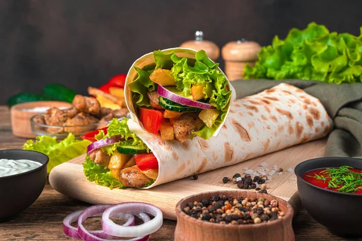

Pizza

Description
Shawarma is a popular Middle Eastern dish that consists of meat (usually chicken or beef) cooked on a rotating spit, wrapped in a soft pita bread with vegetables and various sauces.
Ingredients
These are the list of ingredients needed:
- Pita bread or tortilla bread
- Thinly sliced meat (chicken, beef, or lamb)
- Veggies (Lettuce, onions, tomatoes, cucumbers)
- Sauce
Steps
These is the procedure to cook shawarma:
- Marinate the meat for some time.
- Grill the meat.
- Slice the veggies.
- Spread sauce on the pita bread.
- Add the meat and veggies on top.
- Roll the pita bread tightly.